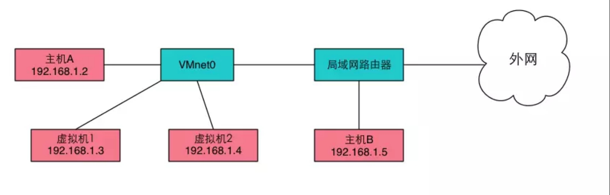

Linux 主机、虚拟机和docker网络配置
使用过 VMware 、VirtualBox、KVM，但一直不太喜欢，最主要的原因就是繁琐的网络配置，例如 NAT、桥接、Host-Only 都啥意思，一直不懂，一直都是按着网上安装教程傻瓜式操作，最近需要搭建多台虚拟机，单是一个里面 ping 外面、外面 ping 里面、虚拟机互相 ping，就弄得我晕头转向！关键还是网络配置的短板，特来记录一下几天来的学习！
背景学习
1、IP、NetMask、GateWay、DNS
检查 DNS 是否正常：因为 QQ 不需要有 DNS ( QQ 只是一个客户端程序，用不到 DNS)，只有浏览网页 ( 需输入网址时 ) 才用到 DNS，所以如果出现 QQ 能用但浏览器连不上网，则很可能是 DNS 出现问题
Sub NetMask - 子网掩码
- 子网掩码 - 用来判断任意两台计算机的 IP 地址是否属于同一子网络
对于一台计算机来说，差不多有三种场合的通信
1）自己与自己通信
2）与本网段其它主机通信
3）与别的网段主机的通信
子网掩码就是为了分辨出以上三个场景而设计的
举个例子：10.10.10.1 255.255.255.0
其中 255.255.255.0 就是网络掩码，由于这个掩码全 1 的二进制位长为 24位，我们也经常写为 10.10.20.1/24
自己与自己通信 当
ping 10.10.10.1时，计算机和自己的IP相比较，所以会发给自己，我们称之为精确匹配与本网段其它主机通信 当
ping 10.10.10.2时，计算机和自己的 IP 相比较，发现并不相等，则需要退而求其次，使用模糊匹配，用自己的掩码255.255.255.0与10.10.10.2做按位与，得到网段10.10.10，这个和自己在一个网段（一个广播域），所以可以广播 ARP 得到对方的 MAC，完成通信。与别的网段主机的通信 当
ping 8.8.8.8时，计算机和自己的 IP 相比较，发现并不相等，则需要退而求其次，使用模糊匹配，用自己的掩码255.255.255.0与8.8.8.8做按位与，得到网段8.8.8，和自己10.10.10不在一个网段，需要使用最模糊的匹配，一般会匹配 0.0.0.0/0，这个是最后的选择，一般指向网关，由于网关和自己在一个网段（一个广播域），所以可以广播 ARP 得到网关的MAC，然后把 ping 包发给网关，完成通信
GateWay - 网关
网关 - 是一个网络通向其他网络的 IP 地址
比如有网络 A 和网络 B，网络 A 的 IP 地址范围为
192.168.1.1~192. 168.1.254，子网掩码为255.255.255.0；网络 B 的 IP 地址范围为192.168.2.1~192.168.2.254，子网掩码为255.255.255.0。在没有路由器的情况下，两个网络之间是不能进行 TCP/IP 通信的，即使是两个网络连接在同一台交换机（或集线器）上，TCP/IP 协议也会根据子网掩码（ 255.255.255.0 ）判定两个网络中的主机处在不同的网络里。而要实现这两个网络之间的通信，则必须通过网关 ( 比如路由器 )- 如果网络 A 中的主机发现数据包的目的主机不在本地网络中，就把数据包转发给它自己的网关，再由网关转发给网络 B 的网关，网络 B 的网关再转发给网络 B 的某个主机
DNS - Domain Name Server - 域名服务器
将 URL 解析成主机 IP 地址
2、常见网卡详解
服务器通常有多块网卡，有板载集成的，同时也有插在 PCIe 插槽的。Linux 系统的命名原来是 eth0,eth1 这样的形式，但是这个编号往往不一定准确对应网卡接口的物理顺序
网卡查看方法
ip aifconfig- 以上命令都没安装，还可直接读取文件
cat /proc/net/dev
判断网卡是虚拟还是物理网卡
# /sys/devices/virtual/net 目录下都是虚拟网卡
$ ls -l /sys/devices/virtual/net
总用量 0
drwxr-xr-x 7 root root 0 Nov 22 16:48 docker0
drwxr-xr-x 5 root root 0 Nov 22 16:48 lo
drwxr-xr-x 6 root root 0 Nov 22 16:48 veth61d2c91
drwxr-xr-x 6 root root 0 Nov 22 16:48 vethbe484a2
物理网卡
eno1- 代表由主板 bios 内置的网卡，如果从 BIOS 中能够取到可用的，板载网卡的索引号，则使用这个索引号命名，例如: eno1ens1- 代表有主板 bios 内置的 PCI-E 网卡，如果从BIOS中能够取到可以用的，网卡所在的PCI-E热插拔插槽(\注：pci槽位号)**的索引号，则使用这个索引号命名，例如: ens1enp2s0- PCI-E 独立网卡，如果能拿到设备所连接的物理位置（PCI总线号+槽位号）信息，则使用这个信息命名，例如: enp2s0eth0、eth1、eth2 ...- 如果以上都不使用，则回到默认的网卡名，统一的 kernel 命名方法，例如: eth0，这种命名方法的结果不可预知的，即可能第二块网卡对应 eth0，第一块网卡对应 eth1
虚拟网卡
- 虚拟网络接口并不真实地从外界接收和发送数据包，而是在系统内部接收和发送数据包，因此虚拟网络接口不需要驱动程序
虚拟网卡和物理网卡在使用上是一致的
lo- localhost - 本地环回接口，ip 是 127.0.0.1，实现系统内部发送和接收数据docker0- docker 在宿主机中的网卡
3. Linux 网络配置文件
I、CentOS 系列
/etc/sysconfig/network-scripts/- 网卡的控制文件目录
$ ls /etc/sysconfig/network-scripts/
ifcfg-eth0 ifdown-ib ifdown-ppp ifdown-tunnel ifup-ib ifup-plusb ifup-Team network-functions
ifcfg-lo ifdown-ippp ifdown-routes ifup ifup-ippp ifup-post ifup-TeamPort network-functions-ipv6
ifdown ifdown-ipv6 ifdown-sit ifup-aliases ifup-ipv6 ifup-ppp ifup-tunnel
ifdown-bnep ifdown-isdn ifdown-Team ifup-bnep ifup-isdn ifup-routes ifup-wireless
ifdown-eth ifdown-post ifdown-TeamPort ifup-eth ifup-plip ifup-sit init.ipv6-global
/etc/sysconfig/network-scripts/ifcfg-eth0- 网卡信息文件DEVICE=eth0 #网卡设备名称 ONBOOT=yes #启动时是否激活 yes | no BOOTPROTO=static #协议类型 dhcp bootp none IPADDR=192.168.1.90 #网络IP地址 NETMASK=255.255.255.0 #网络子网地址 GATEWAY=192.168.1.1 #网关地址 BROADCAST=192.168.1.255 #广播地址 HWADDR=00:0C:29:FE:1A:09 #网卡MAC地址 TYPE=Ethernet #网卡类型为以太网- TYPE 网络类型（通常是 Ethemet）
- DEVICE 接口名（设备,网卡）
- USERCTL [yes|no]（非root用户是否可以控制该设备）
- BOOTPROTO IP 的配置方法 [none|static|bootp|dhcp]（引导时不使用协议|静态分配IP|BOOTP协议|DHCP协议）
- HWADDR MAC地址
- ONBOOT 系统启动的时候网络接口是否有效（yes/no）
- NETMASK 网络掩码
- IPADDR IP 地址
- IPV6INIT IPV6 是否有效（yes/no）
- GATEWAY 默认网关IP地址
- BROADCAST 广播地址
- NETWORK 网络地址
- DNS1 第一 DNS 服务器指向；
- DNS2 备用 DNS 服务器指向；
- 修改
/etc/sysconfig/network-scripts/ifcfg-eth0文件后需要重启网卡 ( sudo systemctl restart network )或电脑
/etc/sysconfig/network
/etc/resolv.conf - DNS 配置文件
/etc/hostname - 主机名
/etc/hosts
II、Ubuntu 系列
/etc/network
/etc/network/interfaces - ip、子网掩码、默认网关
/etc/NetworkManager/
/etc/hostname - 主机名
/etc/resolv.conf - DNS 配置文件
/etc/hosts
Linux 主机常用网络配置
I. Ubuntu
设置静态 IP
$ vim /etc/network/interface
# 在 interface 添加 eth0 接口的 IP，网络号，掩码，广播地址和网关
auto eth0
iface eth0 inet static
address 192.168.2.100
network 192.168.2.0
netmask 255.255.255.0
broadcast 192.168.0.255
gateway 192.168.0.1
重启网卡
$ sudo ifup eth0
$ sudo ifdown eth0
# 或
$ sudo ifconfig eth0 down
$ sudo ifconfig eth0 up
重启网络
`sudo` `/etc/init``.d``/networking` `restart``sudo` `/etc/init``.d``/network-manager` `restart`
``
``
``
2.
| NAT | Bridged Adapter | Host-Only | |
|---|---|---|---|
| VM -> Host |  |
|
|
| Host -> VM |  |
|
|
| VM <-> VM | |
|
|
| VM -> Other Host | |
|
|
| Other Host -> VM | |
|

桥接 - Bridged Adapter
虚拟机和主机是处于同等地位的机器，所以网络功能也无异于主机。并且和主机处于同一网段
原理
桥接模式，使用的是VMnet0虚拟网卡。 vmnet0实际上就是一个虚拟的网桥(2层交换机)，这个网桥有若干个接口，一个端口用于连接你的Host主机，其余端口可以用于连接虚拟机，他们的位置是对等的，谁也不是谁的网关。所以桥接模式下，虚拟机和Host主机是同等地位的主机

配置
/etc/sysconfig/network-scripts/ifcfg-enp0s3
NAT - Network address translation - 网络地址转换
Linux 网络配置命令
ifconfig - 网卡配置